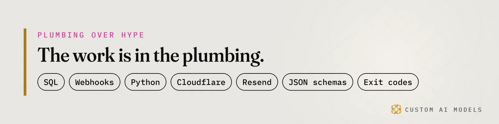
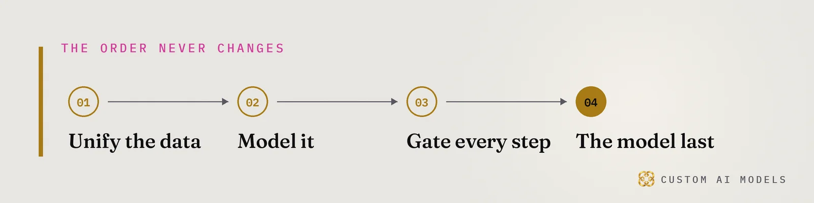

Custom AI Models
Custom AI Models Yeriko Vargas · Founder, Custom AI Models · Oct 2026
Yeriko Vargas · Founder, Custom AI Models · Oct 2026Short answer. HVAC wholesalers in Oakland County MI scale by fixing data before software. HVAC wholesale inventory management systems need clean SKU, branch and ERP exports first. B2B contractor acquisition platforms for distributors then turn that data into repeat orders and quotes. How to scale a commercial HVAC wholesale business: unify the data, gate every step, add the model last.
How to scale a commercial HVAC wholesale business: where does the work pile up?
Scaling a commercial HVAC wholesale business means removing the manual steps between a contractor's request and a shipped order. Quotes, stock checks, substitutions and account lookups live in people's heads and inboxes. Every new branch or contractor account multiplies that load. Software laid on top multiplies the confusion. Custom AI Models builds the layer underneath first: one unified record of parts, prices, accounts and stock.
Picture a Tuesday morning at the counter. Three contractors call, two email, one texts a photo of a nameplate. Someone checks a spreadsheet, then the ERP, then walks the shelf. Each lookup is a place for an error. None of it needs a model. All of it needs one source of truth.
I am Yeriko Vargas. I have spent 8.5 years in data, and Custom AI Models has built production systems since 2022. I have not run an HVAC wholesale project. I build the system, so I speak as the builder, and I start where every failed demo started.
Most owners already tried a demo. A chatbot answered a part question wrong, quoted a superseded model number, and the pilot died quietly. The model was fine. The ERP export behind it was a mess.

Why do HVAC wholesale inventory management systems break under AI?
HVAC wholesale inventory management systems break under AI because the same part lives under several names. One condenser shows up as a manufacturer number, a house SKU, a supersession and a contractor's nickname. Branch stock sits in one export, on-order in another, pricing in a third spreadsheet. A model reading that sees four parts. Your customer sees a wrong quote.
The usual failure points:
- Duplicate SKUs and superseded model numbers
- Branch counts that disagree with the ERP
- Price lists that live in email attachments
- Cylinder and recovery records kept on paper or in one person's file
This is the pattern from Your AI didn't fail. Your data did. Fix the keys first. Then retrieval has something true to retrieve.
Start with an audit, not a build. Pull the exports, line them up by part, and count the disagreements. That count is your real project scope. It also shows which branch keeps the cleanest records, which is where the first pipeline should run.
Refrigerant tracking needs the same treatment. Cylinder in, cylinder out, who signed, which job. That is a record with a schema. It belongs in the data model, not in a notes column.
How do HVAC wholesalers in Oakland County automate repeat contractor orders?
HVAC wholesalers in Oakland County automate repeat contractor orders by treating each order as structured data instead of a phone call. A contractor in Troy or Rochester Hills reorders the same filters, line sets and fittings every season. A pipeline reads the request from email, text or webhook, matches the account, checks stock and drafts the order. A person approves anything the checks flag.
Each step is small and has one job:
- Capture the request from email, a form or a webhook
- Match the contractor account and its price tier
- Check branch stock and substitutions against the ERP
- Validate quantities and terms against written rules
- Route exceptions to a person and ship the rest
Substitutions are where a counter rep earns their pay today. The rule "if a unit is out of stock, offer the approved equivalent" can be written down as a table. Once it is a table, code applies it every time, and a human reviews only the odd cases.
The model reads messy text. Plain code makes the decisions: price tier, credit hold, stock. That split is laid out in The model is a stage. The program is the system. Every step ends in a check that returns pass or fail. Deterministic validation gates decide what ships, and no model gets a vote.

What do B2B contractor acquisition platforms for distributors need underneath?
B2B contractor acquisition platforms for distributors need a clean account and order history before they need a funnel. A mechanical contractor does not answer a banner. They answer the right part, in stock, at their price, today. So the platform starts from your own order data: who buys what, how often, and who went quiet. Then your website connects to that same record.
That means a portal or quote form that writes into the ERP, not into someone's inbox. Contractor accounts get RBAC, so a counter rep sees one thing, a branch manager another, and an owner everything. Dormant accounts surface from gaps in order history. Nothing here is marketing copy. It is orders, accounts and stock.
Estimating follows the same logic. A contractor sends a bill of materials as a PDF or a spreadsheet. A pipeline extracts the lines, maps them to your parts record, and returns a draft quote with every unmatched line flagged. The flag is the feature. A guess hidden inside a quote costs you the account.
If your search traffic froze, the plumbing behind that is in Your HVAC SEO froze. AI Overviews took the click. I sell the work, never a ranking.
Where does the model go, and what do you build first?
The order never changes: unify the data, model it, gate every step, and add the model last. For a wholesaler that means ERP exports and spreadsheets first, then one schema for parts, accounts and branches, then checks on every automated step. Only after that does a model read an email or draft a reply. Skip a step and the demo breaks the same way again.
Log everything. Telemetry tells you when a supplier changes a part number or a price file shifts. That is data drift, and you want a check to catch it, not a customer.
What replacing four spreadsheets actually took shows how much of the job is registration, retention and who is allowed to see what. Expect the same here. The first week goes to the export you trust least.
For founders and executives in Birmingham, Bloomfield Hills or Novi who own a distribution business, this is the boutique version of the job: one builder, one system, your accounts, your data. No platform tour. We talk through your order or inventory data and decide what comes first.
Questions people ask
What data do I need before AI touches my HVAC orders?
Start with ERP exports of parts, accounts, price tiers and branch stock, plus order history. Add any spreadsheet that overrides them. You do not need perfect data. You need keys that match across files, so one part is one record everywhere.
Can AI quote from my ERP without inventing part numbers?
Yes, if quoting is a lookup and not a guess. The pipeline pulls the part from the unified record, and a validation gate rejects any number that is not in it. The model drafts the wording. Code supplies the facts.
Who should own the system once it is built?
You should. Settle that before the build starts. The schema, the gates and the logs should sit in your accounts, documented so your own team can read and change them without calling the builder.
I run a distributor in Troy or Birmingham. Where do we start?
With one workflow and one export. Pick the order type your counter repeats most, map the data behind it, and put a check on each step. A small complete unit that holds is worth more than a broad demo.